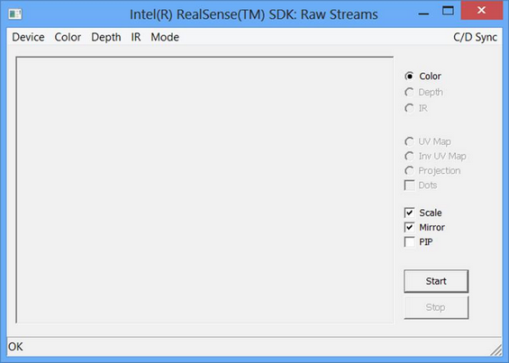

|
The DF_RawStreams and DF_RawStreams.cs samples show how to visualize raw depth and color streams and certain projection functions.
The main window is shown as in Figure 124. From the menu, you can choose the following items:
| • | Device: Select from a list of I/O devices for streaming. |
| • | Color: Select the color resolution. |
| • | Depth: Select the depth resolution. |
| • | IR: Select the infrared stream resolution. |
| • | Mode: Select whether to do live streaming, recording or playback. If the playback or recording mode is selected, the sample will prompt for the playback or recording file name. |
| • | C/D Sync: Select whether to use synchronous or asynchronous color and depth streaming during visualization. The former synchronizes the color sample with the corresponding depth sample, while the latter visualizing them in their own frame rates. |
From the side buttons, you can choose the following options:
| • | Color: Visualize the color stream in the main display. If picture-in-picture is enabled, the stream previously displayed in the main display goes to the picture-in-picture display. |
| • | Depth: Visualize the depth stream in the main display. If picture-in-picture is enabled, the stream previously displayed in the main display goes to the picture-in-picture display. |
| • | IR: Visualize the infrared stream in the main display. If picture-in-picture is enabled, the stream previously displayed in the main display goes to the picture-in-picture display. |
| • | UV MAP: Map the depth coordinates to color coordinates using the QueryUVMap function of the PXC[M]Projection interface and plot the dots onto the color image. |
| • | Inv UV MAP: Map the color coordinates to depth coordinates using the QueryInvUVMap function of the PXC[M]Projection interface, and plot the dots (depth value histogram) onto the color image. |
| • | Dots: Adjust the dot size that uses to plot the mapping from depth to color coordinates. There are three choices: 1 dot, 5 dots and 9 dots. |
| • | Scale: Scale the image to the size of the display window, or the actual size. |
| • | Mirror: Flip the image horizontally to show the camera view or the user view. |
| • | PIP: Open a picture-in-picture window to visualize the second stream in streaming. Multiple clicks can choose the window size and location. |

Figure 124: Raw Streams Main Window
|